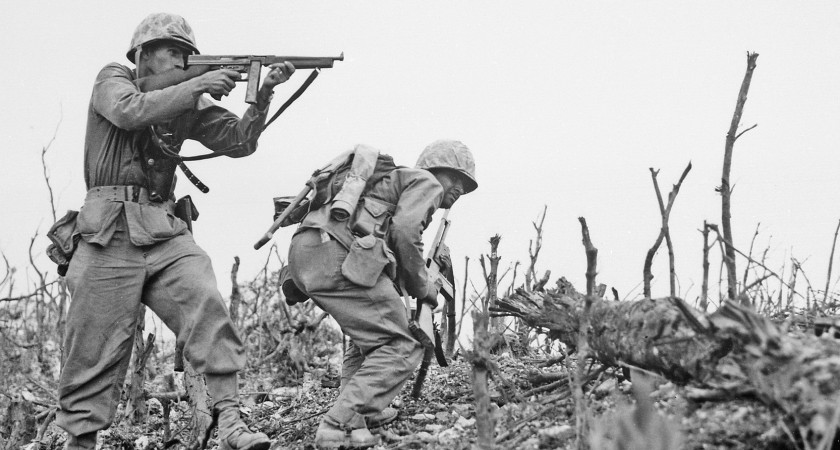
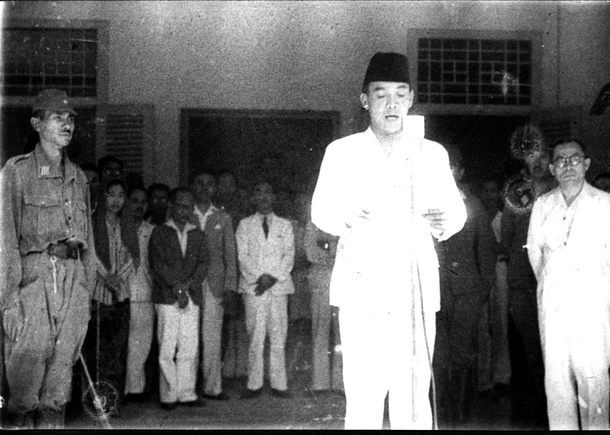
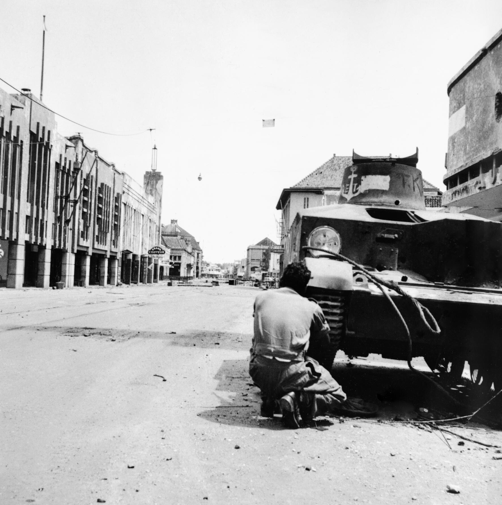
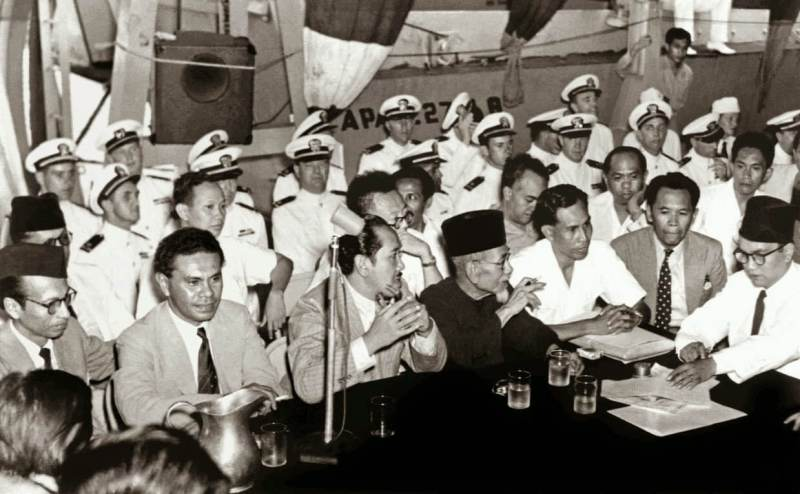
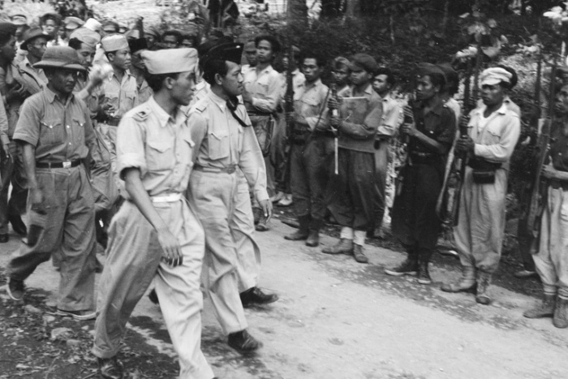

Halaman khusus ini mendokumentasikan eksplorasi mendalam mengenai sejarah politik modern Indonesia, dinamika pergerakan nasional, serta catatan analitis peristiwa masa lampau. Klik tombol + pada topik untuk membaca ringkasan lengkap dan melihat dokumentasi foto.

1. Pengertian dan Waktu Pelaksanaan
Agresi Militer Belanda II (dikenal oleh militer Belanda sebagai Operatie Kraai atau Operasi Gagak) adalah serangan militer berskala besar kedua yang dilancarkan oleh Belanda terhadap Republik Indonesia pada tanggal 19 Desember 1948.
2. Latar Belakang dan Tujuan
3. Kronologi Singkat
4. Strategi Perlawanan Indonesia
5. Akhir Konflik & Dampak
Kecaman internasional, keberhasilan Serangan Umum 1 Maret 1949, serta desakan PBB memaksa Belanda berunding melalui Perjanjian Roem-Roijen hingga pengakuan kedaulatan.

1. Waktu dan Tempat
Proklamasi kemerdekaan Republik Indonesia dikumandangkan pada hari Jumat, 17 Agustus 1945, bertempat di Jalan Pegangsaan Timur No. 56, Jakarta Pusat.
2. Tokoh Penting
3. Makna Sejarah
Menandai lahirnya negara Republik Indonesia yang merdeka, berdaulat, serta terlepas dari belenggu penjajahan bangsa asing.

1. Latar Belakang
Puncak konfrontasi antara pejuang Indonesia melawan tentara Sekutu dan NICA pasca-proklamasi, dipicu oleh tewasnya Brigadir Jenderal A.W. Mallaby.
2. Peristiwa Puncak (10 November 1945)
Rakyat dan pejuang Surabaya di bawah pimpinan Bung Tomo membakar semangat perlawanan menghadapi ultimatum Inggris untuk menyerahkan senjata.
3. Dampak
Diperingati setiap tanggal 10 November sebagai Hari Pahlawan karena keteguhan rakyat Surabaya mempertahankan kemerdekaan.

1. Pelaksanaan
Perundingan antara Indonesia dan Belanda yang dilaksanakan di atas geladak kapal perang Amerika Serikat, USS Renville, yang berlabuh di Teluk Jakarta pada 8 Desember 1947.
2. Tokoh Utama
Delegasi Indonesia dipimpin oleh Amir Sjarifuddin, sedangkan pihak Belanda dipimpin oleh R. Abdul Kadir Widjojoatmodjo.
3. Dampak Merugikan
Wilayah kekuasaan Republik Indonesia semakin menyempit akibat diterapkannya Garis Demarkasi Van Mook, yang kemudian memicu Agresi Militer Belanda II.

1. Latar Belakang
Dilancarkan untuk membuktikan kepada dunia internasional (khususnya PBB) bahwa Republik Indonesia dan TNI masih ada dan kuat meskipun ibu kota telah diduduki Belanda saat Agresi Militer II.
2. Pelaksanaan
Serangan besar-besaran yang direncanakan oleh Sri Sultan Hamengku Buwono IX dan dipimpin di lapangan oleh Letkol Soeharto di kota Yogyakarta.
3. Hasil Utama
Berhasil menduduki Yogyakarta selama 6 jam dan mematahkan propaganda Belanda di dunia internasional bahwa TNI telah hancur.